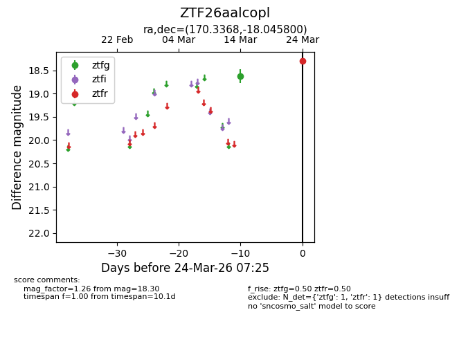
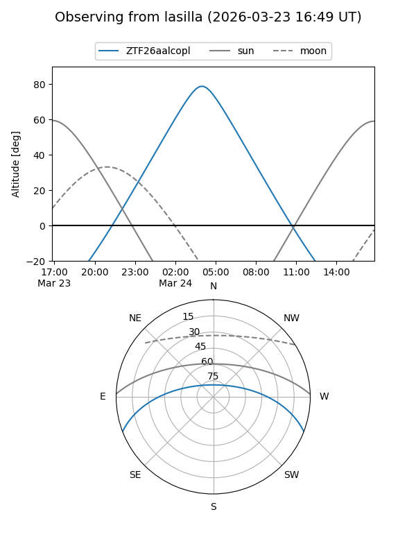
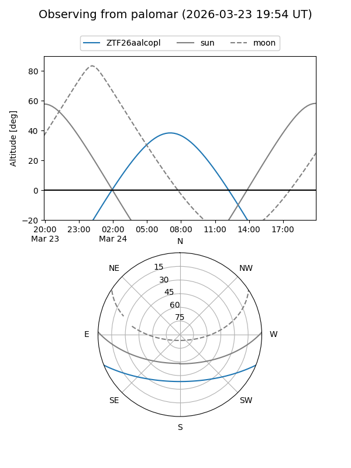

ZTF26aalcopl
Target ZTF26aalcopl at 2026-03-24 07:29
Aliases and brokers:
FINK: link
Lasair: link
ALeRCE: link
alt names
ZTF26aalcopl (ztf,fink_ztf)
Coordinates:
equatorial (ra, dec) = 170.3368,-18.04580
equatorial (HMS+DMS) = 11:21:20.83,-18:02:44.88
galactic (l, b) = (274.6241,+39.82265)
Flags:
Photometry:
last ztfg=18.63, ztfr=18.30
1 ztfg, 1 ztfr detections
Lightcurve

Visibility


Additional plots